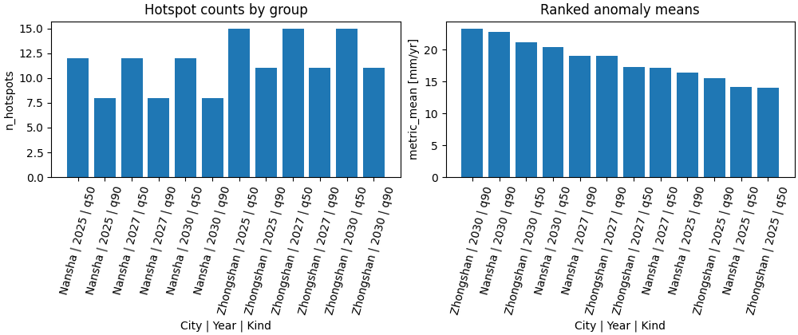

Note
Go to the end to download the full example code.
Summarize hotspot point clouds into tidy group tables#
This example teaches you how to use GeoPrior’s
summarize-hotspots utility.
Unlike the plotting scripts, this command is a table builder. It starts from a hotspot point cloud CSV and converts it into a tidy summary grouped by city, year, and hotspot kind.
Why this matters#
A hotspot map or point cloud is useful for visual inspection, but it is not yet the compact artifact that downstream analysis usually needs.
This builder converts hotspot points into a grouped table with:
hotspot counts,
min/mean/max hotspot subsidence values,
min/mean/max hotspot anomaly values,
optional baseline summaries,
optional threshold summaries.
That makes it a strong lesson page for the
tables_and_summaries section.
Imports#
We call the real production entrypoint from the project code. Then we read the generated CSV back in and build one compact teaching preview.
from __future__ import annotations
import tempfile
from pathlib import Path
import matplotlib.pyplot as plt
import numpy as np
import pandas as pd
from geoprior._scripts.summarize_hotspots import (
summarize_hotspots,
summarize_hotspots_main,
)
Build a compact synthetic hotspot point cloud#
The real script expects a hotspot CSV produced by the spatial forecast workflow, with fields such as:
city
year
kind
value
metric_value
and optionally:
baseline_value
threshold
For the lesson, we create two cities, three years, and two hotspot kinds. That is enough to show how the builder groups the point cloud into one summary row per (city, year, kind).
rng = np.random.default_rng(11)
rows: list[dict[str, object]] = []
for city in ["Nansha", "Zhongshan"]:
city_shift = 0.0 if city == "Nansha" else 6.0
for year in [2025, 2027, 2030]:
year_shift = {2025: 0.0, 2027: 3.5, 2030: 8.0}[year]
for kind in ["q50", "q90"]:
kind_shift = 0.0 if kind == "q50" else 5.0
n_hot = 12 if kind == "q50" else 8
if city == "Zhongshan":
n_hot += 3
baseline_mean = 36.0 + city_shift
threshold = 11.0 + 0.7 * year_shift + 0.4 * kind_shift
for i in range(n_hot):
coord_x = 100 + rng.normal(0.0, 18.0)
coord_y = 200 + rng.normal(0.0, 14.0)
metric_value = max(
0.1,
threshold
+ rng.normal(2.8 + 0.2 * year_shift, 1.3),
)
baseline_value = max(
0.1,
baseline_mean + rng.normal(0.0, 2.2),
)
value = baseline_value + metric_value
rows.append(
{
"city": city,
"panel": "future_hotspots",
"kind": kind,
"year": year,
"coord_x": float(coord_x),
"coord_y": float(coord_y),
"value": float(value),
"hotspot_mode": "delta_abs",
"hotspot_quantile": 0.90,
"metric_value": float(metric_value),
"baseline_value": float(baseline_value),
"threshold": float(threshold),
}
)
hotspots_df = pd.DataFrame(rows)
print("Hotspot point-cloud preview")
print(hotspots_df.head(10).to_string(index=False))
Hotspot point-cloud preview
city panel kind year coord_x coord_y value hotspot_mode hotspot_quantile metric_value baseline_value threshold
Nansha future_hotspots q50 2025 100.615470 219.036466 50.269462 delta_abs 0.9 15.392137 34.877324 11.0
Nansha future_hotspots q50 2025 94.636549 192.616621 50.417302 delta_abs 0.9 14.540644 35.876658 11.0
Nansha future_hotspots q50 2025 113.443941 174.137453 51.624363 delta_abs 0.9 15.836513 35.787849 11.0
Nansha future_hotspots q50 2025 112.246812 198.088071 50.326014 delta_abs 0.9 13.307172 37.018842 11.0
Nansha future_hotspots q50 2025 114.841243 197.164582 51.109915 delta_abs 0.9 13.601378 37.508537 11.0
Nansha future_hotspots q50 2025 84.333868 178.798631 48.838232 delta_abs 0.9 14.313476 34.524755 11.0
Nansha future_hotspots q50 2025 65.433869 188.603249 46.567078 delta_abs 0.9 13.192123 33.374955 11.0
Nansha future_hotspots q50 2025 73.135650 200.512930 50.453533 delta_abs 0.9 14.966424 35.487109 11.0
Nansha future_hotspots q50 2025 86.615271 205.389913 50.072383 delta_abs 0.9 14.732407 35.339977 11.0
Nansha future_hotspots q50 2025 109.804021 214.600257 47.741222 delta_abs 0.9 13.530957 34.210266 11.0
Write the synthetic hotspot CSV#
The production command consumes a point-cloud CSV, so we follow the same workflow here.
tmp_dir = Path(
tempfile.mkdtemp(prefix="gp_sg_hotspots_summary_")
)
hotspot_csv = tmp_dir / "fig6_hotspot_points.synthetic.csv"
hotspots_df.to_csv(hotspot_csv, index=False)
print("")
print(f"Input hotspot CSV written to: {hotspot_csv}")
Input hotspot CSV written to: C:\Users\Daniel\AppData\Local\Temp\gp_sg_hotspots_summary_m1p1qwt8\fig6_hotspot_points.synthetic.csv
Run the real summarizer#
We ask the production command to build the grouped summary CSV.
out_csv = tmp_dir / "fig6_hotspot_summary.csv"
summarize_hotspots_main(
[
"--hotspot-csv",
str(hotspot_csv),
"--out",
str(out_csv),
"--quiet",
"false",
],
prog="summarize-hotspots",
)
city year kind n_hotspots value_min value_mean value_max metric_min metric_mean metric_max baseline_min baseline_max baseline_mean threshold_min threshold_max
Nansha 2025 q50 12.0 46.567078 49.470485 51.624363 11.545781 14.182289 15.836513 33.173922 37.508537 35.288196 11.00 11.00
Nansha 2025 q90 8.0 50.112015 52.930405 57.378268 13.501966 16.375926 17.601341 33.069644 39.940586 36.554479 13.00 13.00
Nansha 2027 q50 12.0 49.165382 52.727912 55.929848 15.309741 17.128467 19.580623 32.088148 38.654189 35.599445 13.45 13.45
Nansha 2027 q90 8.0 48.980421 55.030629 58.432405 16.170307 19.088655 21.718278 32.810114 40.423315 35.941973 15.45 15.45
Nansha 2030 q50 12.0 53.748913 56.866909 59.584138 19.018178 20.390287 22.233826 34.139234 38.193778 36.476622 16.60 16.60
Nansha 2030 q90 8.0 54.018507 57.770795 63.738567 21.582151 22.764478 24.073276 30.902120 39.665291 35.006317 18.60 18.60
Zhongshan 2025 q50 15.0 53.393357 57.173975 61.215609 11.748987 14.061983 15.806005 39.250512 46.453860 43.111991 11.00 11.00
Zhongshan 2025 q90 11.0 53.870743 59.011489 66.288554 12.183180 15.518367 16.494707 40.258971 49.971849 43.493122 13.00 13.00
Zhongshan 2027 q50 15.0 55.838581 58.977852 61.273352 13.319936 17.289388 19.216860 36.807607 44.237062 41.688464 13.45 13.45
Zhongshan 2027 q90 11.0 57.192446 60.396510 65.281238 17.024212 19.055332 20.842763 38.226363 46.003669 41.341177 15.45 15.45
Zhongshan 2030 q50 15.0 57.878482 62.666566 67.511258 18.546229 21.188522 23.196659 37.422181 45.584612 41.478044 16.60 16.60
Zhongshan 2030 q90 11.0 61.879928 65.438189 69.012310 21.819144 23.342572 24.656007 39.032765 44.372443 42.095617 18.60 18.60
[OK] summary -> C:\Users\Daniel\AppData\Local\Temp\gp_sg_hotspots_summary_m1p1qwt8\fig6_hotspot_summary.csv
Read the generated summary table#
The output has one row per (city, year, kind) group.
summary = pd.read_csv(out_csv)
print("")
print("Written file")
print(" -", out_csv.name)
print("")
print("Grouped summary table")
print(summary.to_string(index=False))
Written file
- fig6_hotspot_summary.csv
Grouped summary table
city year kind n_hotspots value_min value_mean value_max metric_min metric_mean metric_max baseline_min baseline_max baseline_mean threshold_min threshold_max
Nansha 2025 q50 12.0 46.567078 49.470485 51.624363 11.545781 14.182289 15.836513 33.173922 37.508537 35.288196 11.00 11.00
Nansha 2025 q90 8.0 50.112015 52.930405 57.378268 13.501966 16.375926 17.601341 33.069644 39.940586 36.554479 13.00 13.00
Nansha 2027 q50 12.0 49.165382 52.727912 55.929848 15.309741 17.128467 19.580623 32.088148 38.654189 35.599445 13.45 13.45
Nansha 2027 q90 8.0 48.980421 55.030629 58.432405 16.170307 19.088655 21.718278 32.810114 40.423315 35.941973 15.45 15.45
Nansha 2030 q50 12.0 53.748913 56.866909 59.584138 19.018178 20.390287 22.233826 34.139234 38.193778 36.476622 16.60 16.60
Nansha 2030 q90 8.0 54.018507 57.770795 63.738567 21.582151 22.764478 24.073276 30.902120 39.665291 35.006317 18.60 18.60
Zhongshan 2025 q50 15.0 53.393357 57.173975 61.215609 11.748987 14.061983 15.806005 39.250512 46.453860 43.111991 11.00 11.00
Zhongshan 2025 q90 11.0 53.870743 59.011489 66.288554 12.183180 15.518367 16.494707 40.258971 49.971849 43.493122 13.00 13.00
Zhongshan 2027 q50 15.0 55.838581 58.977852 61.273352 13.319936 17.289388 19.216860 36.807607 44.237062 41.688464 13.45 13.45
Zhongshan 2027 q90 11.0 57.192446 60.396510 65.281238 17.024212 19.055332 20.842763 38.226363 46.003669 41.341177 15.45 15.45
Zhongshan 2030 q50 15.0 57.878482 62.666566 67.511258 18.546229 21.188522 23.196659 37.422181 45.584612 41.478044 16.60 16.60
Zhongshan 2030 q90 11.0 61.879928 65.438189 69.012310 21.819144 23.342572 24.656007 39.032765 44.372443 42.095617 18.60 18.60
Compare with the direct in-memory API#
The script also exposes the core grouping function directly. This is useful for tests and notebook workflows.
summary_api = summarize_hotspots(hotspots_df)
print("")
print("Direct API result matches CSV output:")
print(summary_api.equals(summary))
Direct API result matches CSV output:
False
Build one compact visual preview#
This preview is not part of the production builder itself. It is a teaching aid for the gallery page.
- Left:
hotspot counts by city-year-kind.
- Right:
ranked anomaly means.
summary["group"] = (
summary["city"].astype(str)
+ " | "
+ summary["year"].astype(str)
+ " | "
+ summary["kind"].astype(str)
)
ranked = summary.sort_values(
["metric_mean", "n_hotspots"],
ascending=[False, False],
).reset_index(drop=True)
fig, axes = plt.subplots(
1,
2,
figsize=(10.0, 4.2),
constrained_layout=True,
)
# Hotspot counts
ax = axes[0]
ax.bar(summary["group"], summary["n_hotspots"])
ax.set_title("Hotspot counts by group")
ax.set_xlabel("City | Year | Kind")
ax.set_ylabel("n_hotspots")
ax.tick_params(axis="x", rotation=75)
# Ranked anomaly means
ax = axes[1]
ax.bar(ranked["group"], ranked["metric_mean"])
ax.set_title("Ranked anomaly means")
ax.set_xlabel("City | Year | Kind")
ax.set_ylabel("metric_mean [mm/yr]")
ax.tick_params(axis="x", rotation=75)

Learn how to read the summary table#
Each row corresponds to one:
city
year
kind
combination.
The core reading order is:
read
n_hotspotsto see how large the hotspot cloud is;read
value_*to understand hotspot subsidence levels;read
metric_*to understand hotspot anomaly intensity;use
baseline_*andthreshold_*when the source CSV provides those optional columns.
In other words:
the point-cloud CSV is the geometric/point-level artifact,
the summary CSV is the compact grouped artifact.
What the key columns mean#
value_*summary of the hotspot subsidence values themselves.
metric_*summary of the anomaly or delta measure used to define or score hotspot points.
baseline_*optional summary of the baseline values attached to the hotspot points.
threshold_*optional summary of the group threshold values.
The threshold is often constant within a group, but the script still keeps both min and max for robustness.
Why this builder is useful in practice#
This builder is a bridge between hotspot maps and later reporting.
A useful workflow is:
generate hotspot points from a spatial forecast workflow,
summarize them by city, year, and kind,
compare counts and anomaly magnitudes across groups,
only then build narrative tables or paper figures.
This keeps:
hotspot extraction,
group-level tabulation,
and final visualization
clearly separated.
Why this page belongs after compute_hotspots.py#
The previous lesson built a compact city-year hotspot table from forecast CSVs directly.
This lesson starts later in the chain:
it assumes hotspot points already exist,
and it compresses those points into grouped summary rows.
So the two scripts are related, but they summarize different intermediate artifacts.
Command-line version#
The same lesson can be reproduced from the CLI.
Legacy dispatcher:
python -m scripts summarize-hotspots \
--hotspot-csv results/figs/fig6_hotspot_points.csv \
--out fig6_hotspot_summary.csv
Quiet mode:
python -m scripts summarize-hotspots \
--hotspot-csv results/figs/fig6_hotspot_points.csv \
--out fig6_hotspot_summary.csv \
--quiet true
Modern CLI:
geoprior build hotspots-summary \
--hotspot-csv results/figs/fig6_hotspot_points.csv \
--out fig6_hotspot_summary.csv
The gallery page teaches the builder. The command line reproduces it in a workflow.
Total running time of the script: (0 minutes 1.165 seconds)